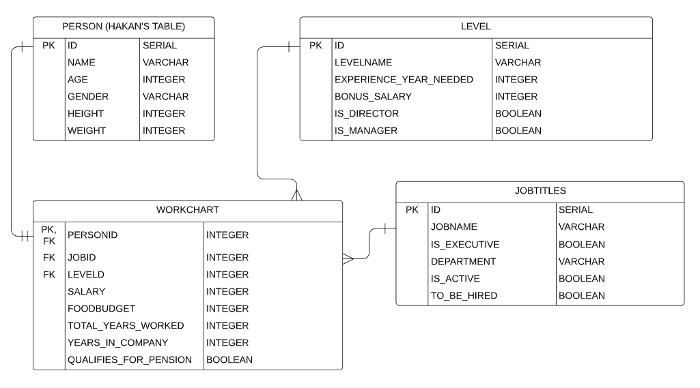

Parts Implemented by Sinem Elif Haseki¶
For EmployeeDB, I have worked on the tables JOBTITLES, LEVEL, WORKCHART and their related functions.
Database Design¶
{kind=link}
The “JOBTITLES” table contains the available job titles along with their properties like its department, whether it is active, executive, or can be hired.
The “LEVEL” table contains the available levels for jobs along with their properties like its experience year, bonus salary, whether it is director or manager.
The “WORKCHART” table contains the current workchart information which maps the name of the employee to their job title, level, salary, foodbudget, total years they worked, years in the company and whether they quailfy for pension.
Code¶
Database Functions¶
- def add_jobtitle(self, jobtitle):
adds a new job title returns: jobtitle_key
- def delete_jobtitle(self, jobtitle_key):
deletes a job title
- def update_jobtitle(self, jobtitle_key, title, is_executive, department, is_active, to_be_hired):
updates an existing job title returns: jobtitle_key
- def get_jobtitle(self, jobtitle_key):
get a single job title by its key returns: jobtitle_
- def get_jobtitles(self):
get all job titles and add them to a list returns: jobtitles
- def get_jobtitle_id(self, jobtitle_name):
returns the id of a job title by its given name returns: jobtitle_id
These are the functions about job titles, for all CRUD operations as well as getting the job title id for the foreign key operations.
- def add_level(self, level):
adds a new level returns: level_key
- def delete_level(self, level_key):
deletes a level
- def update_level(self, level_key, title, experience, bonus_salary, is_director, is_manager):
updates an existing level returns: level_key
- def get_level(self, level_key):
get a single level by its key returns: level_
- def get_levels(self):
get all levels and add them to a list returns: levels
- def get_level_id(self, level_name):
returns the id of a level by its given name returns: level_id
These are the functions about level, for all CRUD operations as well as getting the level id for the foreign key operations.
- def add_workchart(self, workchart):
adds a new workchart returns: workchart_key
- def delete_workchart(self, workchart_key):
deletes a workchart
- def get_workchart(self, workchart_key):
get a single workchart by its key returns: workchart_
- def get_workcharts(self):
get all workcharts and add them to a list returns: workcharts
- def update_workchart(self, personid, jobid, levelid, salary, foodbudget, total_yr_worked, yr_in_comp, qualify):
updates an existing workchart returns: workchart_key
These are the functions about workchart, for all CRUD operations as well as getting the names of employees, titles of jobs, titles of levels from their id values from the foreign key operations.
View Functions¶
- def list_jobtitles():
lists all the existing job titles by calling the get job titles function from the Database if user is logged in as admin, they can delete some of the existing job titles
- def jobtitle_page(jobtitle_key):
gets only the requested job title by its job title key by calling get job title function from the Database if user is logged in as admin, they can edit the job title
- def jobtitle_add_page():
adds a job title to the database by calling the add job title function from database validates whether the title is in appropriate form
- def jobtitle_update_page(jobtitle_key):
updates a job title to the database by calling the add job title function from database validates whether the title is in appropriate form
- def list_levels():
lists all the existing levels by calling the get levels function from the Database if user is logged in as admin, they can delete some of the existing levels
- def level_page(level_key):
gets only the requested level by its level key by calling get level function from the Database if user is logged in as admin, they can edit the level
- def level_add_page():
adds a level to the database by calling the add level function from database validates whether the title is in appropriate form
- def level_update_page(level_key):
updates a level to the database by calling the add level function from database validates whether the title is in appropriate form
- def list_workcharts():
lists all the existing workcharts by calling the get workcharts function from the Database get_employees, get_levels and get_jobtitles because of the foreign keys if user is logged in as admin, they can delete some of the existing workcharts
- def workchart_page(workchart_key):
gets only the requested workchart by its workchart key by calling get workchart function from the Database get_employees, get_levels and get_jobtitles because of the foreign keys if user is logged in as admin, they can edit the workchart
- def workchart_add_page():
adds a workchart to the database by calling the add workchart function from database and get_employees, get_levels and get_jobtitles because of the foreign keys validates whether the salary is in appropriate form
- def workchart_update_page(workchart_key):
updates a workchart to the database by calling the add workchart function from database get_employees, get_levels and get_jobtitles because of the foreign keys validates whether the salary is in appropriate form